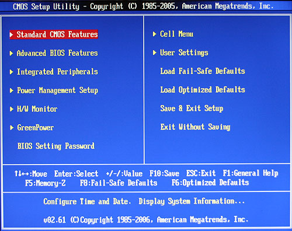

컴퓨터 포맷
준비물 윈도우 운영체제 CD or USB, 백업드라이브
-
포맷 하기 전에 백업해둘 파일들을 삭제하지 않을 드라이브 안이나 웹드라이브, 외장하드 등에 저장한다.
-
윈도우 운영체제를 담은 USB(CD일 경우 CD를 넣고 재부팅)를 본체 포트에 꼽아놓고 다시 시작을 누른다.
-
컴퓨터가 다시 시작하면서 처음 화면에 CMOS를 변경하기 위한 BIOS 접근 키를 알려주면 해당 키를 눌러 CMOS창에 접근한다.
-
하단과 같은 창이 뜨면 제일 먼저 Load Optimized Defaults를 눌러 설정을 초기화 해준다.
 -
Standard CMOS Features에서 드라이브 수량과 종류, 사양 등을 파악한다. 추후 윈도우 설치 후 디스크 파티션을 나눌 때 필요하다.
-
Advanced BIOS Features에서 First Boot Device를 USB(운영체제가 CD면 CD-ROM으로 설정)로 바꿔주고, Second Boot Device는 CDROM으로 바꿔준다. Third Boot Device는 굳이 변경하지 않아도 된다. 설정이 완료됐으면 Hard Disk Boot Priority를 눌러 운영체제를 담은 USB나 CDROM을 가장 상위로 올려준다.
-
Full screen 부팅을 disabled로 바꾸어주고, Quick Boot은 Enabled로 바꾸어준 뒤 저장한다.
-
윈도우 설치화면이 나오면 Windows에서 모든 기능이 사용가능한 Ultimate을 설정해주고 다음 클릭, 동의함 누르고 다음 클릭, 사용자 지정(고급)을 누르고 다음 클릭, 드라이브 옵션(고급) 클릭해준다.
-
디스크 파티션 나누는 부분인데, 총 3개 파티션으로 나누기를 권장한다. C:System(프로그램 설치 드라이브) D:Project(작업 드라이브) E:Data(백업 드라이브)로 나눈다. 윈도우 설치를 위한 C:시스템 예약 100MB는 남겨두어야 한다.
-
Windows 설치가 완료되면 사용자 이름을 입력하는 창이 뜬다. 이 때, 이름을 입력해버리면 이름은 관리자이지만 제약이 많은 허수아비 관리자가 된다. 진정한 관리자가 권한을 얻기 위해 Shift+F10을 눌러 콘솔창을 연다. 창이 뜨면 net user administrator /active :yes *을 입력해주고 엔터, 비밀번호를 입력하라고 뜨면 비밀번호를 입력한 뒤 taskkill /f /im msoobe.exe을 입력하여 강제종료 해준다. 대략 15초의 시간이 있는데 이 때, 포트에 꽂혀있는 USB를 뽑아야 한다.
-
시스템이 시작되면 윈도우>제어판>관리도구>컴퓨터관리>디스크관리에서 C, D, E드라이브 설정을 맞춰주고, 이름도 C:System, D:Project, E:Data로 바꾸어준다.